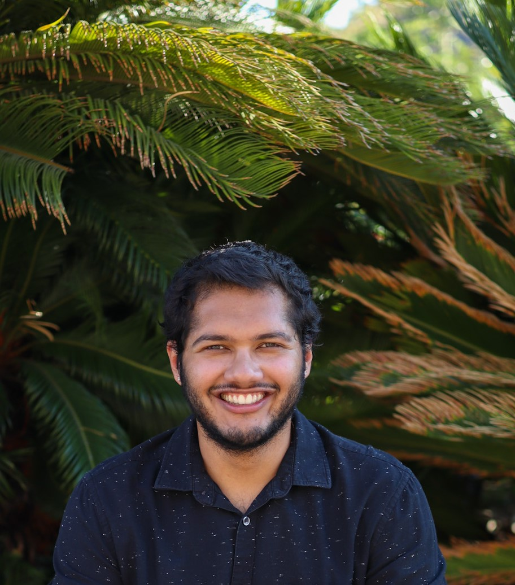

We Are The Stanford CS PhD Student Advisory Council
The Stanford CS PhD Student Advisory Council (CS SAC) is a volunteer
group of CS PhD students who try to make sure student voices are
heard in the department. Throughout the academic year, we host
events, sit in on meetings with faculty and administrators, and
gather feedback from you all. We're led by two co-chairs who are
elected by the CS PhD student body, but any CS PhD student is
welcome to join us and get involved at any time — we're a fun
bunch, we promise!
Even if you're not able to join us directly, feel free to reach out with any questions, comments, concerns or ideas you might have. We're always looking for ways to make the department a better home for all of us. You can email any SAC member directly or use our anonymous contact form, which you can find in the contact section of this website.
Even if you're not able to join us directly, feel free to reach out with any questions, comments, concerns or ideas you might have. We're always looking for ways to make the department a better home for all of us. You can email any SAC member directly or use our anonymous contact form, which you can find in the contact section of this website.
Our Members
Alexander "AJ" Root
Research: Compilers and Graphics
My name's AJ, I'm a third year PhD working on new programming
languages for graphics in Fred Kjolstad's lab, and a co-chair
of th SAC. I did undergrad and a masters at MIT, where I was
involved with the FLI program. Feel free to reach out about
anything!
Áron Ricardo Perez-Lopez
Research: Systems and Formal Verification
I'm a third year student in Clark Barrett's lab working on
SMT-based model checking. I'm interested in all aspects of
hardware and software verification. Apart from the Advisory
Council, I am involved in the Graduate Student Council and The
Stanford Daily. I love spending time outdoors in all four
seasons going walking, hiking, running, biking, skiing, and
skating. I'm also a co-chair of the SAC, so feel free to reach
out about anything!
Hanna Lachnitt
Research: Systems
I am in the CENTAUR lab and advised by Clark Barrett. I was an
advisory council chair from 2022-2023 and worked on
appreciation awards, the rotation survey, tea times and many
other projects! Currently, I am launching a faculty allies
program for PhD students to connect students who need advice
to faculty volunteers. In my free time I enjoy hiking, crafts
such as crocheting and knitting and playing board games.
Liza Pertseva
Research: Systems
Hi! I am a second year C.S Ph.D in systems advised by
Professor Clark Barrett and am part of the Stanford Centaur
Lab. I am interested in formal verification, automated
reasoning and programming languages! I also love hiking and
sailing. Please feel free to reach out with any questions
about research or questions about Stanford (rotations, classes
etc).

Michał Gerasimiuk
Research: Computational Biology
I'm a second year Ph.D. student interested in
brain–computer interfaces, systems neuroscience, and
broadly the intersection of computing and biotechnology. I'm
comes from Białystok, Poland, and got my B.S. in computer
science at Yale. Feel free to reach out to him if you'd like
to talk about international student experiences or
interdisciplinary work outside our department
Nikil Selvam
Research: Probabilistic Modeling, Trustworthy AI
Hi, I'm Nikil! I'm a second year PhD student here on the AI
track. Happy to chat about anything CS@Stanford or life in
general!
Zhiqiang Xie
Research: HCI
Hi, I'm a third year PhD student in HCI, happy to chat!

Ayush Pandit
Research: Computational Biology, AI
Hi, I'm Ayush! I'm currently a third year PhD student working
on machine learning for drug discovery and protein design in
the Ron Dror Lab I also completed my undergraduate degree at
Stanford (Bioengineering '22). During undergrad, I was
involved in the FLI community and the Stanford synthetic
biology community. I'm super happy to chat about anything
related to computational biology & machine learning, including
rotations & research areas, or anything about life at Stanford
/ in the Bay Area too!
Contact
Have any questions, comments, concerns, or ideas for the department?
Wanna see your own picture in our members section and get more involved?
Or maybe you have feedback that you'd like to provide anonymously?
You're welcome to get in touch with any of us via email, or to email Áron or AJ directly, at arpl@cs.stanford.edu or ajroot@stanford.edu.
You can also find our anonymous feedback submission form here.
Wanna see your own picture in our members section and get more involved?
Or maybe you have feedback that you'd like to provide anonymously?
You're welcome to get in touch with any of us via email, or to email Áron or AJ directly, at arpl@cs.stanford.edu or ajroot@stanford.edu.
You can also find our anonymous feedback submission form here.